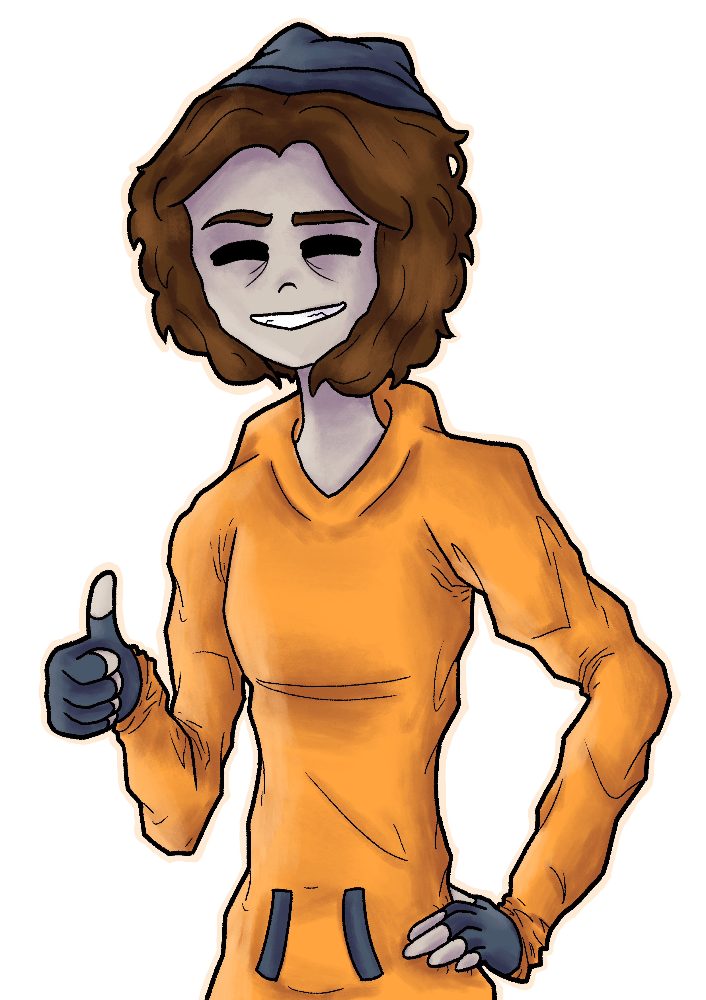
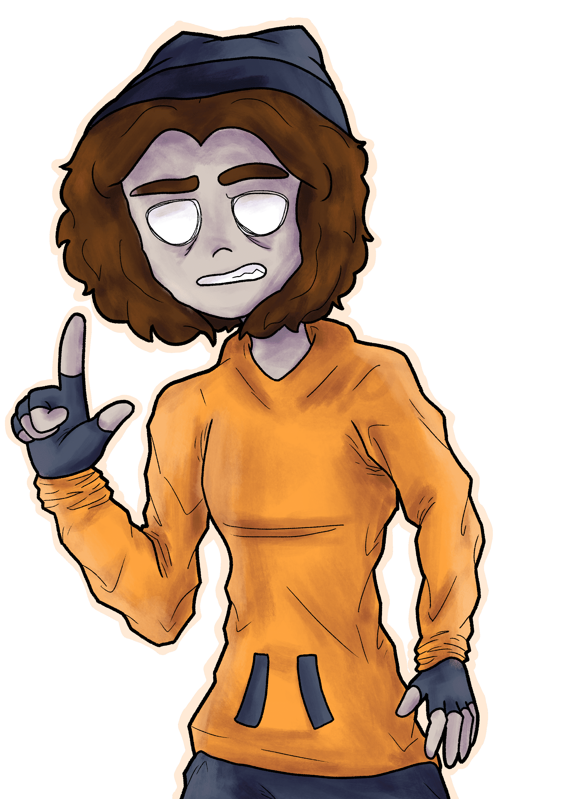
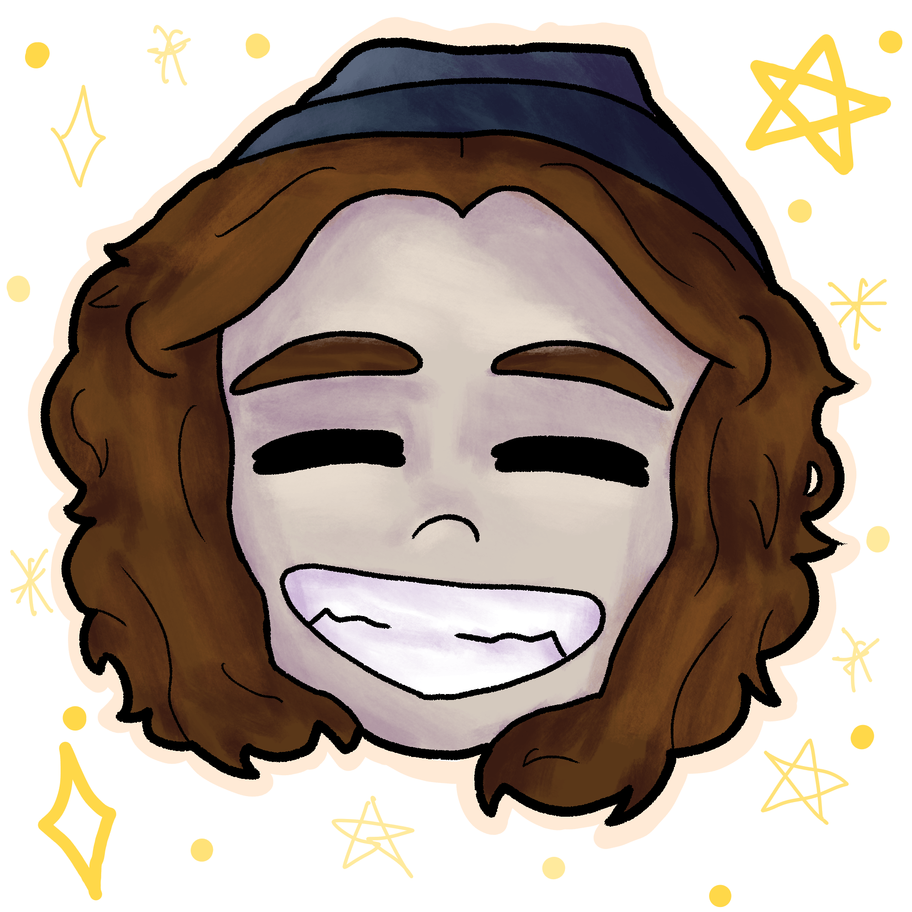

Soy una pequeña creadora de arte digital española, a la cual la inspiración artística le vino desde los siete años. A parte de otros hobbies, el arte es el que guardo con más cariño.
Mi estilo de dibujo
Realmente no sé muy bien como explicarlo. Si lo tuviera que definir, diría que es una mezcla entre cartoon y anime, manteniendo lo simple pero bonito. De todas formas, si quieres averiguarlo más a fondo, ve a ver mi portfolio.
Lo que me gusta dibujar
- Personajes
- OCs
- Paisajes
- Fanarts
- Animales
- Rostros
- Poses dinámicas
- Personas tocando instrumentos

Lo que no me gusta dibujar
- Robots
- Edificios/ciudades
- Vehículos
- Interiores
- Texturas
- CABALLOS

Mis referentes

Herramientas que uso
- Tableta gráfica: Huion Kamvas 13 (con pantalla)
- Software de dibujo: Krita (soy pobre :P)
- Material tradicional: lápices de grafito, lápices de colores, rotuladores de alcohol Tongfushop, acuarelas Artecho